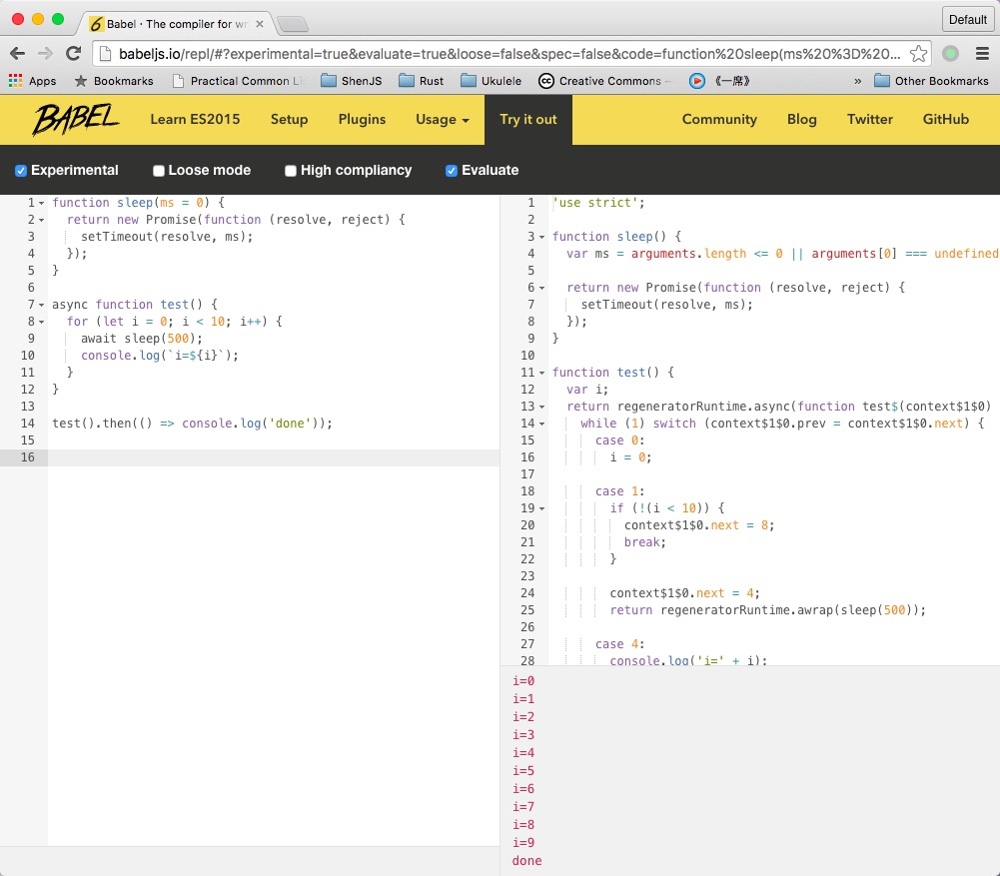

前言
近一年来，JavaScript界关于ES6（ECMAScript 6，本文简称ES6）的讨论越来激烈，作为未来要统一全宇宙的语言（PHP是世界上最好的语言，但JavaScript终将统一全宇宙），JavaScript的运行环境众多，对ECMAScript标准的支持程度不一，所以对于ES6我一直处于观望状态。
前不久ES6标准正式发布，而Node.js也在最近刚刚发布了5.1.0版本，对ES6标准的支持也越来越完善，babel（一个将ES6/ES7写的代码转换为ES5代码的编译器）也发布了6.0版本，近期也涌现出了不少好文章（比如小问写的「给 JavaScript 初心者的 ES2015 实战」），种种迹象表明ES6真的要火了，而我也终于按耐不住了……
这几天正在写一个方便下载文件的模块（可以得到下载进度信息），正好可以使用ES6新语法特性来改写，作为我写下的第一个使用ES6语法的NPM模块。本文内容将分为以下几部分：
- 配置babel编译环境
- 编写模块
- 单元测试
- 发布模块
本文会简略介绍文中出现的ES2015新语法，具体介绍可阅读阮一峰所著的「ECMAScript 6 入门」或babel官方文档中的「Learn ES2015」。
babel官方提供了一个在线REPL，可以实时输出转换后的JavaScript代码，并且看到其运行结果，对于初学者尤其有用。访问网址http://babeljs.io/repl ，其界面如下：

说明：使用时勾选左边的Experimental可使用最新的语法特性
软件环境
由于相关软件和模块正处于高速发展期，无法保证你阅读这篇文章的时候还能照着一步一步准确无误地运行下去，以下列出所用到的软件和模块的版本：
- Node.js
v5.1.0 - npm
3.3.12 - babel
6.2.0 (babel-core 6.2.1) - mocha
2.3.4
配置babel编译环境
1、安装babel
Babel is a JavaScript compiler. Use next generation JavaScript, today
目前最新版的Node.js（v5.1.0）还未完全支持ES2015的新语法特性，而且我们编写的模块可能要在Node v0.12.x或更低版本下运行，因此需要借助babel将ES2015标准的JavaScript程序转换成ES5标准的。
执行以下命令安装babel：
$ npm i -g babel-cli@6.2.0
由于babel依赖的模块比较多，可能会花费比较长的时间甚至安装不成功，可以尝试使用cnpmjs的NPM镜像，比如（简单在安装命令末尾添加--registry=http://registry.npm.taobao.org）：
$ npm i -g babel-cli@6.2.0 --registry=http://registry.npm.taobao.org
cnpmjs镜像的详细介绍可访问其官网：http://cnpmjs.org/
安装完成后，系统将获得以下两个命令：
babel编译器babel-node可以直接运行ES2015程序的Node命令
babel-cli的详细用法可以参考其文档：https://babeljs.io/docs/usage/cli/
2、初始化项目
执行以下命令初始化项目（执行npm init时需要按提示输入相应信息，可直接按回车跳过）：
$ mkdir es2015_demo && cd es2015_demo && git init && npm init
现在我们新建一个文件test.js试试是否能正常运行：
function sleep(ms = 0) {
return new Promise(function (resolve, reject) {
setTimeout(resolve, ms);
});
}
async function test() {
for (let i = 0; i < 10; i++) {
await sleep(500);
console.log(`i=${i}`);
}
}
test().then(() => console.log('done'));
执行以下命令运行test.js：
$ babel-node test.js
在我本机的环境下显示以下错误信息：
/usr/local/lib/node_modules/babel-cli/node_modules/babel-core/lib/transformation/file/index.js:540
throw err;
^
SyntaxError: /Users/glen/work/tmp/es2015_demo/test.js: Unexpected token (7:6)
5 | }
6 |
> 7 | async function test() {
| ^
8 | for (let i = 0; i < 10; i++) {
9 | await sleep(500);
10 | console.log(`i=${i}`);
...
由提示信息可判断出，应该是不支持async function导致的，因为这是ES7标准中定义的新语法，需要配置相应的babel插件才能支持它。本文为了方面使用最新的JavaScript语法，暂时不考虑babel的编译性能，直接开启所有可能用到的插件，具体可以自行研究babel的官方文档。
新建文件.babelrc：
{
"presets": ["es2015", "stage-0"]
}
.babelrc为babel的配置文件，保存在项目的根目录下，其中presets用于设置开启的语法特性集合，详细介绍可参考官方文档：https://babeljs.io/docs/usage/babelrc/ 和 http://babeljs.io/docs/plugins/#presets
由于当前版本的babel没有预置stage-0，所以我们还需要执行以下命令安装并保存到package.json的devDependencies中：
$ npm i babel-preset-stage-0 --save-dev
现在再重新执行test.js，可看到控制台每隔500ms打印出一行，直到输出done时结束：
$ babel-node test.js
i=0
i=1
i=2
i=3
i=4
i=5
i=6
i=7
i=8
i=9
done
3、编译程序
在发布项目时，要求可以在不依赖babel编译器的环境下运行，因此我们需要将ES2015的程序编译成ES5的：
$ babel test.js --out-file test.compiled.js
执行上面的命令后，生成了编译后的文件test.compiled.js，我们尝试执行它看看：
$ node test.compiled.js
在我的系统环境下提示以下出错信息：
/Users/glen/work/tmp/es2015_demo/test.compiled.js:4
var ref = _asyncToGenerator(regeneratorRuntime.mark(function _callee() {
^
ReferenceError: regeneratorRuntime is not defined
at /Users/glen/work/tmp/es2015_demo/test.compiled.js:4:31
...
经阅读官方文档可知，编译后的JavaScript程序有时候需要依赖一些运行时polyfill，通过安装babel-polyfill模块来获得：
$ npm i babel-polyfill --save
然后，我们需要修改编译后的文件test.compiled.js，在其首行加上以下代码来载入babel-polyfill：
require('babel-polyfill');
再次执行test.compiled.js便可看到与$ babel-node test.js一样的结果。
polyfill的详细介绍可参考官方文档：http://babeljs.io/docs/usage/polyfill/
至此，我们已经配置了一个能使用ES2015语法的Node.js运行环境了。
编写模块
1、功能描述
本文以lei-download模块为例，该模块是一个主要功能是根据一个URL来下载文件到本地，或者本地直接文件的复制，同时提供下载/复制进度信息。其使用方法如下：
let download = require('lei-download');
download('http://avatars.githubusercontent.com/u/841625', 'avatar.jpg', (size, total) => {
console.log(`已下载${size}，总共${total}`);
}, (err, filename) => {
if (err) {
console.error(err);
} else {
console.log(`已保存到${filename}`);
}
});
download()函数支持以下参数组合：
download(source, callback);download(source, progress, callback);download(source, target, callback);download(source, target, progress, callback);
参数说明如下：
source源文件，可以为本地文件或URL（http://或https://开头）target目标文件，可省略，默认生成一个在本地临时目录的随机文件名progress下载进度，可省略callback回调函数
在编写模块时，我们首先要实现以下两个函数的功能：
downloadFile(source, target, progress, callback)从一个URL下载文件并保存到本地copyFile(source, target, progress, callback)复制一个本地文件
然后在编写一个download()函数来判断source参数，并选择使用downloadFile()或者copyFile()来完成请求。
2、编写程序
在本项目中，所有的ES2015源程序均保存在src目录下，发布项目时会执行相应的命令将其编译并输出到lib目录，具体方法在**「发布模块」**小节中介绍。
实现copyFile()函数，新建文件src/copy.js：
import fs from 'fs';
export default function copyFile(source, target, progress, callback) {
fs.stat(source, (err, stats) => {
if (err) return callback(err);
let ss = fs.createReadStream(source);
let ts = fs.createWriteStream(target);
ss.on('error', callback);
ts.on('error', callback);
let copySize = 0;
ss.on('data', data => {
copySize += data.length;
progress && progress(copySize, stats.size);
});
ss.on('end', () => callback(null, target));
ss.pipe(ts);
});
}
说明：
import fs from 'fs'为ES2015模块系统加载模块的方式，可理解为var fs = require('fs')，具体在下文「模块系统」一节中介绍。- 通过
fs.createReadStream(source)和fs.createWriteStream(target)来创建读取文件流和写入文件流，并监听读取文件流的data事件获得当前进度信息。 export default function copyFile() {}将函数copyFile()作为模块输出，相当于module.exports = function copyFile() {}，具体在下文「模块系统」一节中介绍。
为了测试该代码能否正常工作，可在文件末尾增加以下测试程序（在编写单元测试时将删除）：
copyFile(__filename, '/tmp/copy.js', (size, total) => {
console.log(`进度${size}/${total}`);
}, (err, filename) => {
if (err) {
console.error(err);
} else {
console.log(`已保存到${filename}`);
}
});
以上程序的作用是将当前JavaScript文件复制到/tmp/copy.js，使用babel-node执行该文件将得到以下结果：
$ babel-node src/copy.js
进度749/749
已保存到/tmp/copy.js
实现downloadFile()函数，新建文件src/download.js：
import fs from 'fs';
import request from 'request';
export default function downloadFile(url, target, progress, callback) {
let s = fs.createWriteStream(target);
s.on('error', callback);
let totalSize = 0;
let downloadSize = 0;
let req = request
.get({
url: url,
encoding: null
})
.on('response', res => {
if (res.statusCode !== 200) {
return callback(new Error('status #' + res.statusCode));
}
totalSize = res.headers['content-length'] || null;
res.on('data', data => {
downloadSize += data.length;
progress && progress(downloadSize, totalSize);
});
res.on('end', () => callback(null, target));
})
.pipe(s);
}
说明：
- 程序使用
request模块来下载URL的内容，使用时执行命令$ npm i request --save安装该模块。 - 通过
request模块的pipe()方法将收到的数据写入到fs.createWriteStream(target)创建的写入文件流中，request模块的详细使用方法可参考其文档：https://www.npmjs.com/package/request
为了测试该代码能否正常工作，可在文件末尾增加以下测试程序（在编写单元测试时将删除）：
downloadFile('http://avatars.githubusercontent.com/u/841625', '/tmp/avatar.jpg', (size, total) => {
console.log(`进度${size}/${total}`);
}, (err, filename) => {
if (err) {
console.error(err);
} else {
console.log(`已保存到${filename}`);
}
});
以上程序的作用是将URL为http://avatars.githubusercontent.com/u/841625的文件复制到/tmp/avatar.jpg，使用babel-node执行该文件将得到以下结果：
$ babel-node src/download.js
进度15622/34956
进度32006/34956
进度34956/34956
已保存到/tmp/avatar.jpg
实现download()函数，新建文件src/index.js：
import os from 'os';
import path from 'path';
import mkdirp from 'mkdirp';
import copyFile from './copy';
import downloadFile from './download';
export default function download(...args) {
var source, target, progress, callback;
if (args.length < 2) {
throw new TypeError('invalid argument number');
}
source = args[0];
callback = args[args.length - 1];
if (args.length === 2) {
callback = args[1];
} else if (args.length === 3) {
if (typeof args[1] === 'function') {
progress = args[1];
} else {
target = args[1];
}
} else {
target = args[1];
progress = args[2];
}
progress = progress || null;
target = target || randomFilename(download.tmpDir);
mkdirp(path.dirname(target), err => {
if (err) return callback(err);
if (isURL(source)) {
downloadFile(source, target, progress, callback);
} else {
copyFile(source, target, progress, callback);
}
});
}
let getTmpDir = os.tmpdir || os.tmpDir;
function randomString(size = 6, chars = 'abcdefghijklmnopqrstuvwxyz0123456789') {
let max = chars.length + 1;
let str = '';
while (size > 0) {
str += chars.charAt(Math.floor(Math.random() * max));
size--;
}
return str;
}
function randomFilename(tmpDir = getTmpDir()) {
return path.resolve(tmpDir, randomString(20));
}
function isURL (url) {
if (url.substr(0, 7) === 'http://') return true;
if (url.substr(0, 8) === 'https://') return true;
return false;
}
说明：
import copyFile from './copy'用于载入模块，相当于var copyFile = require('./copy')。download(...args)函数中的...args相当于var args = Array.prototype.call(arguments);。- 程序使用
mkdirp模块来创建目标文件的上级目录，使用时执行命令$ npm i mkdirp --save安装该模块。 getTmpDir()函数用于取得当前系统的临时目录，通过os.tmpDir()获得。randomString(size)函数用于生成指定长度的随机字符串。randomFilename(tmpDir)用于生成临时文件名，默认存储在系统临时目录下，可通过tmpDir参数指定。isURL(url)函数用于判断参数是否为一个URL。
为了验证程序是否正确，我们可以将上文的src/copy.js和src/download.js中的测试程序放到src/index.js文件的末尾并执行（需要将旧的程序程序删除），比如：
download(__filename, '/tmp/copy.js', (size, total) => {
console.log(`进度${size}/${total}`);
}, (err, filename) => {
if (err) {
console.error(err);
} else {
console.log(`已保存到${filename}`);
}
});
正常情况下，其执行结果应该跟上文中的结果是一致的。
3、模块系统
Node.js使用的是CommonJS模块系统，模块的输出我们一般通过给exports对象设置属性来做：
// 输出变量或函数
exports.x = 123;
exports.y = function () { console.log('hello'); };
可以通过以下方式来操作：
var mod = require('./my_module');
console.log(mod.x);
mod.y();
也可以通过覆盖module.exports来输出一个函数或者其他数据类型：
module.exports = function () {
console.log('这是一个函数');
};
通过以下方式来操作：
var fn = require('./my_module');
fn();
而在ES2015中，模块通过export语句来输出：
// 普通输出，相当于 exports.x = y;
export const a = 123;
export var b = 456;
export function c() { }
export class d { }
// 默认输出，相当于 module.exports = z;
export default function y() { }
通过import语句来引入模块，不同的引入方式其含义是不一样的，比如：
// 操作 export var x = y 方式的输出
import {a, b, c, d} from './my_module';
// 通过相应的变量名称 a, b, c, d 来操作
// 或者将所有输出指向一个对象
import * as mod from './my_module';
// 通过 mod.a, mod.b, mod.c, mod.d 来操作
// 操作 export default x 方式的输出
import y from './my_module';
对于非ES2015程序输出的模块，import * as mod和import mod其结果是一样的，比如：
import * as fs1 from 'fs';
import fs2 from 'fs';
// fs1.readFile() 和 fs2.readFile() 是一样的
为了更容易理解ES2015的模块系统原理，我们可以通过阅读编译后的JavaScript程序来了解。访问babel的在线REPL或将程序保存到本地，并执行babel file.js来查看编译后的程序。
以下ES2015代码：
export const a = 123;
export var b = 456;
export function c() { }
export class d { }
export default function y() { }
编译后结果如下：
"use strict";
Object.defineProperty(exports, "__esModule", {
value: true
});
exports.c = c;
exports["default"] = y;
function _classCallCheck(instance, Constructor) {
if (!(instance instanceof Constructor)) {
throw new TypeError("Cannot call a class as a function");
}
}
var a = 123;
exports.a = a;
var b = 456;
exports.b = b;
function c() {}
var d = function d() {
_classCallCheck(this, d);
};
exports.d = d;
function y() {}
有上面的代码可以看出，export var b = 456这样的输出方式，实际上相当于var b = exports.b = 456，即直接设置exports对象的属性来完成。而export default y则是设置exports对象的default属性。
另外，还设置了exports.__esModule = true来标记这是一个ES2015输出的模块，在通过import来引入模块时会判断此属性来执行相应的规则，下文将详细介绍。
再看看以下的ES2015代码：
import {a, b, c, d} from './my_module';
import * as mod from './my_module';
import y from './my_module';
a;
mod.a;
y;
其编译后的JavaScript代码如下：
'use strict';
function _interopRequireDefault(obj) {
return obj && obj.__esModule ? obj : {
'default': obj
};
}
function _interopRequireWildcard(obj) {
if (obj && obj.__esModule) {
return obj;
} else {
var newObj = {};
if (obj != null) {
for (var key in obj) {
if (Object.prototype.hasOwnProperty.call(obj, key)) newObj[key] = obj[key];
}
}
newObj['default'] = obj;
return newObj;
}
}
var _my_module = require('./my_module');
var mod = _interopRequireWildcard(_my_module);
var _my_module2 = _interopRequireDefault(_my_module);
_my_module.a;
mod.a;
_my_module2['default'];
首先，a是通过import {a} from './my_module'来引入的，编译后的代码中访问a使用的是_my_module.a，而_my_module = require('./my_module')，所以其对应的是export var a = 123这样的输出。
mod是通过import * as mod from './my_module'来引入的，其编译后的代码为_interopRequireWildcard(require('./my_module'))。在_interopRequireWildcard()函数中，如果载入的模块是由ES2015输出的，那么不做任何处理，否则会生成一个输入模块的拷贝，并且设置其default属性为自身。
y是通过import y from './my_module'来引入的，对y的访问被编译成了_my_module2['default']，所以y实际上是export default的输出。而_my_module2 = _interopRequireDefault(require('./my_module'))，函数_interopRequireDefault()对载入的非ES2015模块做了处理，会返回一个default属性指向该模块的新对象。
当然模块系统的还有更复杂的语法规则，详细说明可参考：阮一峰所著的「ECMAScript 6 入门」中Module一章。
4、封装模块
上文例子中的download()函数所在的文件src/index.js中用到randomFilename()和isURL()这两个函数，为了使得代码结构更清晰，我们尝试把这些工具函数转移到src/utils.js中。
新建文件src/utils.js：
import path from 'path';
import os from 'os';
let getTmpDir = os.tmpdir || os.tmpDir;
function randomString(size = 6, chars = 'abcdefghijklmnopqrstuvwxyz0123456789') {
let max = chars.length + 1;
let str = '';
while (size > 0) {
str += chars.charAt(Math.floor(Math.random() * max));
size--;
}
return str;
}
export function randomFilename(tmpDir = getTmpDir()) {
return path.resolve(tmpDir, randomString(20));
}
export function isURL (url) {
if (url.substr(0, 7) === 'http://') return true;
if (url.substr(0, 8) === 'https://') return true;
return false;
}
说明：getTmpDir()和randomString()仅在函数randomFilename()函数中用到，所以不需要使用export输出。
修改文件src/index.js，将相应的代码删掉，并在文件首部import语句后面增加以下代码：
import {randomFilename, isURL} from './utils';
单元测试
本文将以mocha测试框架为例，单元测试程序也将使用ES2015来写。
首先执行以下命令安装mocha：
$ npm i -g mocha
安装完成后可执行以下命令验证是否安装成功：
$ mocha --version
2.3.4
通过阅读babel的官方文档（访问http://babeljs.io/docs/setup/#mocha ）可知，为了让Node.js中的require()函数能直接载入ES2015程序，需要依赖babel-core模块，执行以下命令安装：
$ npm i babel-core mocha --save-dev
运行mocha命令的时候，需要增加额外的参数--compilers js:babel-core/register让其使用babel来载入JavaScript程序。为了方便，我们可以修改package.json文件，增加以下内容：
{
"scripts": {
"test": "mocha --compilers js:babel-core/register"
}
}
说明：我们通过npm init命令生成package.json文件时，已经自动生成了test命令，其默认值为echo \"Error: no test specified\" && exit 1，直接将其改为mocha --compilers js:babel-core/register即可。
以上准备工作完成后，便可以开始写单元测试程序了。新建文件test/test.js：
import assert from 'assert';
import path from 'path';
import fs from 'fs';
import download from '../src';
import {randomFilename} from '../src/utils';
let readFile = f => fs.readFileSync(f).toString();
let getFileSize = f => fs.statSync(f).size;
describe('es2015_demo', () => {
it('复制本地文件成功', done => {
let source = __filename;
let target = randomFilename();
let onProgress = false;
download(source, target, (size, total) => {
onProgress = true;
assert.equal(size, total);
assert.equal(total, getFileSize(source));
}, (err, filename) => {
assert.equal(err, null);
assert.equal(onProgress, true);
assert.equal(target, filename);
assert.equal(readFile(source), readFile(target));
done();
});
});
});
说明：本文只为了演示如何配置mocha和编写单元测试程序，所以没有给download()函数编写完整的单元测试，仅编写一个测试用例作为演示。
好了，现在执行$ npm test命令看看：
$ npm test
> es2015_demo@1.0.0 test /Users/glen/work/tmp/es2015_demo
> mocha --compilers js:babel-core/register
es2015_demo
✓ 复制本地文件成功
1 passing (49ms)
至此，我们已经完成了使用ES2015编写模块，并使用mocha来进行单元测试，下文将介绍如何通过babel编译程序，并发布模块。
发布模块
1、编译
上文已提到，为了让使用ES2015编写的代码能在Node.js上正常运行，需要先将其编译成ES5标准的代码，然后还需要在程序入口载入babel-polyfill模块。
我们可以修改文件package.json，为其增加compile命令：
{
"scripts": {
"compile": "babel -d lib/ src/"
}
}
说明：$ babel -d lib/ src/命令表示lib目录下的所有文件，并保存到src目录下。
配置完成后，可以执行$ npm run compile命令编译试试：
$ npm run compile
> @isnc/es2015_demo@1.0.0 compile /Users/glen/work/tmp/es2015_demo
> babel -d lib/ src/
src/copy.js -> lib/copy.js
src/download.js -> lib/download.js
src/index.js -> lib/index.js
src/utils.js -> lib/utils.js
此时，我们还不能直接载入lib/index.js文件，因为在此之前需要载入babel-polyfill模块。编辑文件package.json，设置模块入口文件：
{
"main": "index.js"
}
说明：使用$ npm init生成package.json文件时，main的默认值即为index.js，可无需修改。
新建文件index.js：
require('babel-polyfill');
module.exports = require('./lib').default;
说明：在src/index.js中download()函数使用的是export default输出，所以在Node.js中需要读取模块输出的default属性。
为了验证编译后的程序能否正常工作，可以新建文件test_compiled.js：
var download = require('./');
download(__filename, '/tmp/copy.js', function (size, total) {
console.log('进度%s/%s', size, total);
}, (err, filename) => {
if (err) {
console.error(err);
} else {
console.log('已保存到%s', filename);
}
});
使用以下命令运行该程序是可以正常工作的：
$ node test_compiled.js
2、发布
我们在开发项目时，一般都会使用Git这样的源代码版本管理工具。上文例子中，lib目录的文件是编译生成的，可以不需要纳入到版本管理中。Node.js项目在安装模块时会将其保存到node_modules目录下，这些内容也是不应该纳入版本管理的。可以添加文件.gitignore来将其排除：
*.log
node_modules
lib
如果要将模块发布到NPM上，ES2015编写的源程序也是不需要的，可以添加文件.npmignore来将其排除：
src
在使用$ npm publish命令发布模块时，可以设置prepublish命令来让其自动执行编译。编辑文件package.json，增加以下内容：
{
"scripts": {
"prepublish": "npm run compile"
}
}
3、善后
上文例子中需要依赖mocha和babel两个工具，当我们开发多个项目或将其作为开源项目发布出去时，可能不同的项目所依赖babel的版本是不一样的，为了开发环境一致，一般我们需要在当前项目中执行其开发时所指定的babel版本。
首先执行以下命令安装babel-cli和mocha：
$ npm i babel-cli mocha --save-dev
安装完成后，对于上文中使用的babel和mocha命令，可以使用./node_modules/.bin/babel和./node_modules/.bin/mocha来执行。编辑package.json文件，更改compile和test命令：
{
"scripts": {
"compile": "./node_modules/.bin/babel -d lib/ src/",
"test": "./node_modules/.bin/mocha --compilers js:babel-core/register"
}
}
扩展阅读
- 给 JavaScript 初心者的 ES2015 实战
- ECMAScript 6 入门
- 「大概可能也许是」目前最好的 JavaScript 异步方案 async/await
- Learn ES2015 - A detailed overview of ECMAScript 6 features
- Using ES6 with npm today
- Using ES6 and ES7 in the Browser, with Babel 6 and Webpack
- Writing NPM packages with ES6 using the Babel 6 CLI
- Set up Sublime Text for Meteor ES6 (ES2015) and JSX Syntax and Linting
- Exploring ES6 - Modules